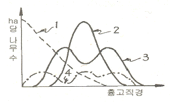
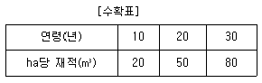
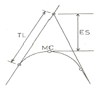
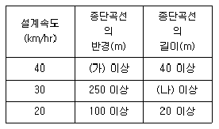
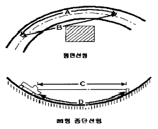
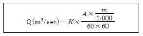

산림기사 (2008-03-02 기출문제)
1과목: 조림학
1. 개화한 후 빨리 자라서 3 ~ 4개월 만에 열매가 성숙하는 것은?
- 아까시아, 오리나무
- 버드나무, 사시나무
- 낙엽송, 갈참나무
- 소나무, 잣나무
(정답률: 52%)

2. 발아세(發芽勢)의 개념으로 가장 적합한 것은?
- 씨앗의 충실도를 무게로 파악하여 나타냄
- 전체 종자수에 대한 발아 종자수의 백분율(%)
- 종자가 일제히 싹트는 힘
- 발아율과 순량율을 곱한 값
(정답률: 41%)
3. 산림작업에서 벌구(代區)내의 임목을 1회에 전부 벌채하는 것을 무엇이라 하는가?
- 택벌(擇代)
- 산벌(傘代)
- 점벌(漸代)
- 개벌(皆代)
(정답률: 68%)
4. 산림작업종을 구분하는데 가장 일반적인 기준이 되는 것으로만 묶인 것은?
- 벌구의 크기, 벌채방법, 임분의 기원
- 비옥도관리 방법 , 나무의 생장량, 벌구의 모양
- 벌채방법, 벌구의 모앙, 토양의 성질
- 윤벌기, 나무의 종류, 임분의 기원
(정답률: 76%)
5. 다음 택벌림형을 나타내는 그림 중 전령임분(全觀林分)에 해당하는 것은?

- 1
- 2
- 3
- 4
(정답률: 42%)
6. 일반적으로 수목의 기관 중 인산의 함량이 가장 많은 기관은?
- 줄기
- 가지
- 뿌리
- 잎
(정답률: 49%)
7. 삽목상의 조건으로 적합한 것은?
- 건조를 막기 위해 해가림이 필요하다.
- 온도가 높을수록 발근에 유리하다.
- 유기물의 함량이 높은 점토질 토양이 적합하다.
- 토양내 미생물의 종류가 다양할 수록 발근에 유리하다.
(정답률: 67%)
8. 화기(花器)의 구조와 종자 및 열매의 구조관계를 바르게 연결한 것은?
- 씨방(자방) - 종자
- 배주 - 열매
- 주피 - 종피
- 주심 - 배
(정답률: 62%)
9. 광주기성(photoper iodism)과 관련된 설명으로 옳은 것은?
- 단일식물은 가을에 해가 짧은 시간 비출 때 개화가 잘 된다.
- 장일식물은 하루에 10시간 정도 광선을 받을 때 개화하는 식물로 분류된다.
- 광주기는 수목의 줄기 생장기간을 결정하는데 영향을 미치지 않는다
- 광주기성에서 중간식물은 일장이 개화에 영향을 미치지 않는 식물이다
(정답률: 39%)
10. 임지의 지위지수(site index)를 평가하는 방법에 대하여 바르게 기술하고 있는 것은?
- 특정 임령에서 그 임분의 우세목의 수고로 지위지수를 결정한다.
- 특정 임령에서 그 임분의 우세목의 재적으로 지위지수 를 결정한다.
- 특정 임령에서 그 입분을 구성하는 우세목과 열세목의 평균직경으로 지위지수를 결정한다.
- 특정임령에서 그 임분의 전체 축적으로 지위지수를 결정한다.
(정답률: 63%)
11. 파종 후 흙덮기가 끝난 후 그 위에 깨끗한 모래를 2~3mm 정도의 두께로 뿌려주는 효과는?
- 잡초발생을 막는다
- 종자의 발아를 촉진한다.
- 빗물에 의한 종자유실을 방지한다.
- 해가림효과를 낸다
(정답률: 43%)
12. 다음 중 토양수분에 대한 요구도가 낮아 산의 능선부에 많이 나타나는 수종은?
- 소나무
- 낙우송
- 버드나무
- 오리나무
(정답률: 52%)
13. 화학적 풍화작용으로서 땅이 회색 또는 담색으로 되는 경향이 있으며 습한 유기물이 쌓인에서 주로 일어나는 작용은?
- 환원작용
- 산화작용
- 가수분해
- 탄산염화
(정답률: 60%)
14. 조림지 풀베기 작업에 대한 설명으로 옳은 것은?
- 모두베기(全씨)는 음수를 조립한 지역에서 실시한다
- 풀베기 작업의 시기는 8월 중순 이후가 적기이다.
- 전나무 조림지에 대한 풀베기 작업은 조림 후 2년 이내에 종료하는 것이 바람직하다.
- 한풍해가 우려되는 조림지에서의 풀베기 작업은 둘레베기(坪刈) 방법을 적용하는 것이 바람직하다
(정답률: 69%)
15. 임목의 무기영양 상태를 진단하는데 적합하지 않은 방법은?
- 엽분석
- 토앙분석
- 시비실험
- 결실시기 관찰
(정답률: 39%)
16. 파종상에서 2년, 그 뒤 상체상(皮替床)에서 1년을 지낸 3년생 묘목을 가장 잘 표현한 것은?
- 2-1
- 1-2묘
- 1/2묘
- 2-1-1묘
(정답률: 73%)
17. 현재의 부적당한 임분을 보육 또는 갱신을 통해서 작업종 수종, 임목, 임분구조 등을 바꾸는 것을 임분전환이라 한다. 다음 중 임분전환을 위한 갱신 수단의 설명으로 틀린 것은?
- 신규조림 - 현재까지 타용도의 무임목지로 있는 나지에 처음으로 실시하는 인공식재
- 재조림 - 개벌적지 또는 산지에서 최후의 종벌 후 나지에 대한 인공식재
- 사전조림 - 임분의 시간적 공간적 배열을 고려한 후계림을 인공식재
- 보식 - 인공갱신에서 조림목의 본수가 60% 이상 활착되지 못했을 경우 조림지를 완벽하게 보완하기 위해서 하는 인공식재
(정답률: 42%)
18. 과거에 비해 오늘날 우리나라의 산에서 소나무의 이 잘 되지 않는 이유와 가장 거리가 먼 것은?
- 임상에서 낙엽층의 증가로 인해서 종자가 토양에 잘 착상이 되지 않는다.
- 과거에 비해서 인위적인 간섭이 감소했다.
- 참나무류 등의 활엽수종의 확대로 인한 경쟁에서 소나무가 불리하다.
- 대기오염 등의 각종 스트레스의 증가로 천연갱신이 감소했다
(정답률: 40%)
19. 수종과 연령 및 임지를 동일하게 하고 밀도만을 다르게 했을 때 임목의 형질과 생산량에 타나는 현상으로 옳은 것은?
- 지하고는 고밀도일수록 낮아진다.
- 상층목의 평균수고는 임목밀도에 따라 크게 다르다.
- 단목의 평균간재적은 고밀도일수록 커진다.
- 고밀도일수록 연륜폭은 좁아진다.
(정답률: 60%)
20. 제벌에 대한 설명으로 옳은 것은?
- 제벌의 시기는 이른 봄이 좋다
- 제벌의 시기는 여름철이 좋다.
- 제벌 적기는 생장 정지기인 가을이다
- 제벌은 목적 나무의 생장 증가에 있다
(정답률: 60%)
2과목: 산림보호학
21. 연해의 검정방법으로 현미경적 감정법의 적용기준이 나머지 셋과 다른 것은?
- 엽록체가 회색 또는 회백색으로 표백된다.
- 원형질이 무색이다.
- 기공의 공변세포에 적갈색의 변화가 생긴다.
- 일부 나무의 피목이 갈색으로 변한다.
(정답률: 56%)
22. 산림화재가 토양에 미치는 영향으로 틀린 것은?
- 지표류하수(surface run-off)가 늘게 된다
- 투수성(penetrabi|ity)이 증가된다.
- 지하의 저수능력이 감퇴된다.
- 물에 의한 침식이 격화된다.
(정답률: 57%)
23. 동해(;東害)를 막는 대책으로 틀린 것은?
- 찬바람의 통로가 되는 곳의 서복쪽에 큰나무를 남겨서 바람을 막는다.
- 상혈 또는 상로(露路)가 되는 곳에는 내동성 수종을 심는다.
- 산출묘의 싹이 늦게 트도록 냉장하였다가 식재한다.
- 산벌 또는 택벌작업을 피하고 개벌작업을 한다.
(정답률: 75%)
24. 다음 균류 중에서 균사에 격막이 없는 것은?
- 불완전균류
- 자낭균문
- 난균륜
- 담자균문
(정답률: 45%)
25. 주로 묘포의 종자를 가해하는 조류로만 짝지어진 것은?i
- 참새, 할미새
- 딱다구리, 왜가리
- 가마우지, 백로
- 어치, 박새
(정답률: 74%)
26. 모잘록병의 방제방법으로 적합하지 않은 것은?
- 종자소독
- 토양소독
- 사이헥사틴 수화제의 살포
- 묘상의 환경개선
(정답률: 50%)
27. 모잘록병의 병원균이 아닌 것은?
- Afmjllaria mellea
- Pythium debaryaum
- Rhizoctonia solani
- Fusarium oxysporum
(정답률: 40%)
28. 보르도액을 조제할 때 주의해야 할 사항으로 틀린 것은?
- 금속제 용기(容器)를 사용한다.
- 생석회액(석회유)에 황산동액을 섞는다.
- 양쪽 용액을 혼합할 때 강하게 휘저어 준다.
- 보르도액은 사용하기 직전에 만들어 사용한다.
(정답률: 66%)
29. 잣나무 털녹병에 걸린 송이풀에서 잣나무로 날아가는 포자는?
- 여름포자
- 겨울포자
- 녹포자
- 담자포자
(정답률: 56%)
30. 그을음병을 방제하는데 가장 알맞는 방법은?
- 질소질 비료를 충분히 준다.
- 진딧물과 짝지벌레 등을 구제한다.
- 토앙소독을 철저히 한다.
- 종자소독을 철저히 한다.
(정답률: 65%)
31. 오동나무 빗자루병의 매개충은?
- 담배장님노린재
- 복숭아혹진딧물
- 목화진딧물
- 오리나무잎벌레
(정답률: 76%)
32. 밤나무혹벌의 피해 부위로 가장 적합한 것은?
- 2년생 가지의 기부
- 일년생 가지의 액아(腋芽) 및 그 조직
- 3년생 가지의 기부
- 2년생 가지의 정부
(정답률: 57%)
33. 유충으로 군집하여 월동하는 해충은?
- 솔나방
- 독나방
- 매미나방
- 미국흰불나방
(정답률: 39%)
34. 솔잎혹파리의 우화 최성기는?
- 4월 상순
- 5월 상순
- 6월 상순
- 7월 상순
(정답률: 56%)
35. 솔껍질깍지벌레에 대한 설명으로 틀린 것은?
- 최초 발생은 1963년이었으나 솔껍질깍지벌레의 피해로 판명된 것은 1983년이었다.
- 가해수종의 가지에 기생하면서 흡즙 가해한다.
- 생활사는 년 1회발생하며 후약충으로 월동하고, 암수의 생활경과가 다른 특이한 생태를 갖는다.
- 솔껍질깍지벌레의 피해정도를 나타내는 척도는 보통 벌레혹형성율을 사용한다.
(정답률: 59%)
36. 임분구성을 통해 풍부한 야생동물군집을 형성하기 위한 방법에 해당하지 않는 것은?
- 택벌시업
- 혼효림의 복층화
- 침엽수 인공림내의 활엽수 도입
- 혼효림의 순림유도 작업
(정답률: 62%)
37. 다음 침엽수 중 내화력이 가장 강한 수종은?
- 잎갈나무
- 소나무
- 삼나무
- 편백
(정답률: 55%)
38. 천적등 방제 대상이 아닌 곤충류에 가장 피해를 주기 쉬운 농약은?
- 지속성접촉제
- 비지속성접촉제
- 훈증제
- 침투성살충제
(정답률: 60%)
39. 수목의 탄저병에 관한 설명으로 틀린 것은?
- 버즘나무주 탄저병은 주로 장마철에 발생한다.
- 오동나무탄저병은 주로 어린 실생묘에서 발생한다.
- 사철나무탄저병은 조기낙엽의 원인이 된다.
- 동백나무 탄저병은 잎은 물론 과실에도 발생한다
(정답률: 38%)
40. 임연부(forest edge)에 대한 설명으로 틀린 것은?
- 임연부는 포유류의 먹이 부족으로 포유류의 서식환경로서는 부적당하다.
- 산림과 초지, 침엽수림과 활엽수립 등 다른 환경유형이 인접하는 곳을 말한다.
- 임연부에는 야생조류의 먹이가 많아 야생조류가 많이 서식할 수 있다.
- 임연부의 무성한 관목은 둥지를 만들기 쉽고 천적에게도 발견되기 어려운 이점이 있다
(정답률: 75%)
3과목: 임업경영학
41. 윤벌기 30년, 작업급 면적 120ha의 낙엽송림 축적을 멀기수확에 의한 방법으로 계산하면 얼마인가? (단, 수확표는 다음과 같다.)(오류 신고가 접수된 문제입니다. 반드시 정답과 해설을 확인하시기 바랍니다.)

- 4400 m3
- 4800 m3
- 5000 m3
- 5200 m3
(정답률: 65%)
42. 다음 중 임지의 특성에 해당하지 않는 것은?
- 일반적으로 임지는 넓고 험하여 집약적인 작업이 어렵다.
- 한랭한 곳이 많아 임업 이외의 다른 사업에는 적당하지 않다.
- 수직적으로 생육환경이 다르지만 비교적 수종분포가 균일하다
- 교통이 불편하므로 임지의 경제적 가치는 교통의 편부에 따라 결정된다.
(정답률: 58%)
43. 임목의 연년생장량(C.A.I )과 평균생장량(M.A.I)과의 관계로 옳은 것은?
- 초기에는 C.A.I가 M.A.I 보다 작다.
- C.A.I는 M.A.I 보다 늦게 극대점을 이룬다.
- M.A.I의 극대점에서는 두 생장량이 같다.
- M.A.I의 극대점에 도달하기 전까지는 항시 C.A.I가 M.A.I보다 작다
(정답률: 59%)
44. 임목의 평가방법을 분류해 놓은 것 중 연결이 틀린 것은?
- 원가방식 - 비용가법
- 수익방식 - G|aser법
- 원가수익절충방법 - 임지기망가법응용법
- 비교방식 - 시장가역산법
(정답률: 60%)
45. 단면적 상수가 4인 릴라스코프(Re|ascope)를 사용하여 8개소를 측정한 결과 측정대상은 64본이었다. 임분 평균수고 12m, 임분 형수 0.50인 이 임분의 ha당 재적은 얼마인가?
- 151 m3
- 172 m3
- 192 m3
- 2⑤ m3
(정답률: 54%)
46. 다음 중 전가계수(前價係數)와 같은 뜻이 아닌 것은?
- 현가계수(現價係數)
- 할인계수(割引係數)
- 복리율(複利率)
- 일괄현가계수(-括現價係數)
(정답률: 47%)
47. 금년에 간벌수입이 100만원의 순수입이 있어 이를 연이율 10 % 로 하여 2년 후의 후가를 계산하면 얼마인가?
- 112만원
- 121만원
- 132만원
- 143만원
(정답률: 69%)
48. 오늘날 컴퓨터의 발전과 더불어 산림경영계획 분야 및 산림의 다목적 이용계획에 적용하는 수학적 분석기법으로 가장 널리 임업분야에서 사용되는 방법은?
- 선형계획법
- 동적계획법
- 비선형계획법
- 그물망분석법
(정답률: 67%)
49. 휴양림의 수용력 관리기법 중 간접기법이 아닌 것은?
- 물리적변형법
- 정보제공법
- 요금부가법
- 활동제한법
(정답률: 50%)
50. 수간석해에서 원판의 측정방법에 속하는 것은?
- 표준목법
- 원주등분법
- 수고곡선법
- 직선연장법
(정답률: 55%)
51. 다음 중 자연휴앙림에 설치되는 어린이놀이터의 위치로 가장 합당한 곳은?
- 그늘지고, 바람이 많은 곳
- 그늘지고, 바람이 불지 않는 곳
- 햇볕 많고, 바람이 많은 곳
- 햇볕 많고, 바람이 불지 않는 곳
(정답률: 54%)
52. 취득원가 3,000만원, 잔존가액 100만원인 목재운반용 트럭이 있다. 이 트럭의 총운행가능거리가 10만 Km이고 실제 운행거리가 4만 Km이면, 생산량 비례법에 의한 총감가상각액은?
- 10600000 원
- 11600000 원
- 13600000 원
- 12600000 원
(정답률: 57%)
53. 휴양림 시설관리에 있어서 각 계절별 관리작업 내용으로 바르게 설명된 것은?
- 봄철에는 모든 시설과 장비를 철저히 점검해서 성수기의 가동에 차질이 없도록 한다.
- 여름철에는 성수기로 인하여 일상적인 작업과 주요 유지관리 작업을 병행하여 실시한다.
- 가을철에는 화장실 등의 건물 청결에 우선순위를 두며 새로운 건물을 짓는다든지 하는 대규모 작업은 지양한다.
- 겨울철에는 건물내의 보수, 가지치기, 건물 외부 페인트칠 등을 하여 시설을 관리한다.
(정답률: 39%)
54. 30년생의 임목이 7본, 25년생 임목이 12본, 20년생 임목이 7본인 경우 평균임령을 본수령으로 계산하면 얼마인가?
- 25 년
- 24 년
- 23 년
- 22 년
(정답률: 59%)
55. 육림비에 대한 설명으로 틀린 것은?
- 일반적으로 육림비 중 가장 많은 비중을 차지하는 것은 0|자이다.
- 육림비를 절약할 수 있는 최선의 방법은 노동비를 절약하는 것이다.
- 육림비 중 고정재비에는 종자, 묘목, 거름, 농약 등이 포함된다.
- 육림비는 노동비, 직접재료비, 공동재료비, 지대, 감각 상각비, 이자로 구성된다.
(정답률: 67%)
56. 임업경영의 성과분석의 방법에 대한 설명으로 틀린 것은?
- 임가소득은 임업소득과 임업외소득으로 구성된다.
- 임업경영의 성과는 임가소득, 임업소득, 임업순수익으로 파악할 수 있다.
- 임업소득은 임업경영의 결과에 의하여 직접적으로 얻은 소득으로 임업경영 성과를 나타내는 가장 정확한 지표가 된다.
- 임업순수익은 임업소득과 마찬가지로 산림면적(인공림)에 반비례한다.
(정답률: 59%)
57. 임업경영의 생산요소 중 생산수단에 속하는 것은?
- 노동, 자본재
- 노동, 임지
- 임지, 자본재
- 노동, 임지
(정답률: 59%)
58. Glaser식에 대한 설명으로 옳은 것은?
- 이율이 높을수록 가격이 높다
- 복리계산을 하기 때문에 복잡하다.
- 중령급 임목에 적용한다.
- 벌기가 지난 임목의 가치 측정에 적당한 방법이다.
(정답률: 65%)
59. 마케팅의 구성 요소 중 야외휴양에 있어서 이용객에게 제공될 휴양 기회에 해당하는 요소는?
- 가격
- 판촉
- 분배
- 상품
(정답률: 55%)
60. 환경임업의 일환인 야생동물의 보육에 대한 설명으로 틀린 것은?
- 수종이 다양하고 열매 맺는 수종이 많으며 모든 영급이 구성된 혼효림이 적합하다.
- 임간초지(林間草地)의 조성은 일시적 초지와 영구초지로 구분한다.
- 야생동물의 최고서식밀도를 유지한다.
- 동기(冬期) 사료급여를 실시한다.
(정답률: 58%)
4과목: 임도공학
61. 비포장 임도에서 종단곡선을 설치하지 않아도 되는 두 구간 종단기울기의 대수차는?
- 20%
- 15%
- 5%
- 3%
(정답률: 52%)
62. 임도의 교각법에 의한 곡선 설치시 각 기호가 나타낸 설명 중 맞는 것은?

- TL: 외선길이, MC: 곡선중심, ES: 곡선길이
- TL: 접선길이, MC: 곡선중심, ES: 외선길이
- TL: 곡선길이, MC: 곡선시점, ES: 접선길이
- TL: 곡선길이, MC: 곡선반지름, ES:외선길이
(정답률: 75%)
63. 지형과 임도밀도와의 관계에 대해 바르게 설명하고 있는 것은?
- 기복량이 많은 지형일수록 임도밀도가 낮다.
- 지형지수가 높을수록 임도밀도는 높다
- 경사가 완만할수록 임도밀도는 낮다.
- 표고가 높을수록 임도밀도는 높다.
(정답률: 41%)
64. 롤러표면에 돌기를 만들어 부착한 것으로 돌기가 전압층에 관입한에 의해 풍화암을 파쇄하여 흙속의 간극수압을 분산시키는 롤러(roller)는?
- 탬핑롤러(tamping roller)
- 탠덤롤러(tandem roller)
- 머캐덤롤러(macadam roller)
- 로드롤러(road roller)
(정답률: 69%)
65. 사면이 급경사이고 붕괴의 우려가 있는 곳에 적용하기 적합지 않은 공법은?
- 옹벽
- 줄떼공
- 돌쌓기
- 편책공
(정답률: 61%)
66. 설계속도에 따른 종단공선의 반경 및 길이 선정시 다음 표에서 (가)와 (나)에 들어갈 수치는?

- (가): 500, (나): 35
- (가): 500, (나): 30
- (가): 450, (나): 30
- (가): 400, (나): 25
(정답률: 40%)
67. 현장에서 비탈면에 직접 적당한 크기와 모양으로 거푸집을 설치하고 콘크리트치기를 하여 비탈면의 안정을 위한 뼈대를 만드는 공법은?
- 비탈흙막이공법
- 비탈힘줄박기공법
- 비탈격자틀붙이기공법
- 비탈프리캐스트틀공법
(정답률: 61%)
68. 임도설계시 평면도를 제도할 때 기본축적은?
- 1: 500
- 1 : 800
- 1 : 1200
- 1 : 1500
(정답률: 47%)
69. 구릉지대에서 임도밀도가 10m/ha이고 임도효율요인이 8일 때 평균집재거리는?
- 0.2km
- 0.4km
- 0.6km
- 0.8km
(정답률: 67%)
70. 다음 중 물에 의한 침식이 아닌 것은?
- 구곡침식
- 누구침식
- 선상침식
- 우격침식
(정답률: 70%)
71. 제도용 콤파스를 이용하여 임도 예정 노선을 지형도에 도시하고자 한다. 지형도의 축척이 1/25000, 계획 종단 구배가 5%, 두 등고선 간의 고저차가 1Om일 때 제도용 콤파스의 1폭은 얼마인가?
- 2mm
- 5mm
- 4mm
- 8mm
(정답률: 39%)
72. 다음 중 노체의 구성 및 그 순서가 바른 것은?
- 노반→기층→노상→표층
- 노상→기층→노반→표층
- 노반→노상→기층→표층
- 노상→노반→기층→표층
(정답률: 63%)
73. 도저의 틸트(tilt) 작용에 대하여 가장 바르게 설명한 것은?
- 속도를 빨리내는 작용이다.
- 돌을 깨는 작용이다.
- 삽날의 좌우높이를 조절하는 작용이다.
- 삽날을 위로 올리는 작용이다.
(정답률: 68%)
74. 다음은 임도의 평면선형과 종단선형을 나타낸 것이다 그림에서 시거를 바르게 표현한 것은?

- A, C
- A, D
- B, C
- B, D
(정답률: 49%)
75. 임도 사면붕괴를 방지하기 위한 돌망태쌓기 공법의 특징이 아닌 것은?
- 일체성과 연속성을 지닌 구조물이다.
- 보강성 및 유연성이 좋다.
- 투수성 및 방음성이 불량하다.
- 돌망태 재료는 아연도금한 철선이 주로 사용된다.
(정답률: 61%)
76. 흙의 입도분포의 좋고 나쁨을 나타내는 균등계수의 산출식으로 옳은 것은?
- 통과 중량 백분율 50%에 대응하는 입경/통과 중량 백분율 20%에 대응하는 입경
- 통과 중량 백분율 60%에 대응하는 입경/통과 중량 백분율 10%에 대응하는 입경
- 통과 중량 백분율 20%에 대응하는 입경/통과 중량 백분율 50%에 대응하는 입경
- 통과 중량 백분율 10%에 대응하는 입경/통과 중량 백분율 60%에 대응하는 입경
(정답률: 57%)
77. 1 gradian은 몇 분인가?
- 9’
- 54’
- 32.4‘
- 60’
(정답률: 40%)
78. 종단면도에 기록되는 사항 중 옳지 않은 것은?
- 지반고
- 토공량
- 계획고
- 계획선의 경사
(정답률: 70%)
79. 임의의 AB간의 물매는 60 〫로서 사거리는 100m 이다. 이때 AB간의 직선거리는? (단 , cos60 〫= 0.5 , sin60 〫= 0.8 이다.)
- 50m
- 80m
- 125m
- 200m
(정답률: 33%)
80. 우리나라 높이의 기준이 되는 수평면은?
- 평균고저면
- 평균해수면
- 평균수준면
- 평균수평면
(정답률: 49%)
5과목: 사방공학
81. 붕괴형 침식 중에서 밀접한 관계가 있는 그 발생 부위가 반드시 계천의 유수와 것은?
- 포락(caving)
- 산붕(landslip)
- 붕락(Slumping)
- 암석붕락(clebris slides)
(정답률: 60%)
82. 수로 설치를 위한 집수구역의 아래와 같은 유량계산 공식 (시우량법)에서 K는 무엇을의미하는가?

- 유출계수
- 유역면적
- 총강우량
- 시간당 유출량
(정답률: 70%)
83. 댐 밑의 세굴을 방지하기 위해서 설치하는 물받이의 길이 는 낮은 댐인 경우 일반적으로 댐높이와 월유수심(越流水深)의 합의 몇 배로 하는가?
- 1.0배
- 0.5배
- 2.0배
- 2.5배
(정답률: 57%)
84. 특수 비탈면 안정공법 중에서 앵커박기공법은 주로 어디에 사용되는가?
- 비탈 보호나 완만경사로 성토를 할 곳
- 급경사의 대규모 암반비탈에 암석이 노출되어 녹화 공사가 불가능한 곳
- 비탈의 암질이 복잡하고 마사토로 구성되어 취급이 곤란하고 지하수가 용출하는 곳
- 비탈 경사가 현저하게 급한 곳에서 토압이 큰 곳이나 비탈틀공법 혹은 흙막이공사 등을 계획하는 곳
(정답률: 56%)
85. 시멘트에 관한 설명으로 틀린 것은?
- 포틀랜드시멘트는 수경성이며 강도가 크다.
- 시멘트의 강도는 혼화제의 배합량으로 표시된다.
- 포틀랜드시멘트의 비중은 보통 3.⑤ ~ 3.15 이다.
- 시멘트를 만들때 석고를 넣으면 완결성(績結性)이 된다.
(정답률: 39%)
86. 우리나라 산림황폐의 원인 중에서 자연적 원인이 아닌 것은?
- 대부분 지질은 화강편마암으로 이루어져 있다.
- 산지가 급경사를 이루고 있다
- 도벌, 남벌이 심하였다.
- 병충해의 피해를 받는다.
(정답률: 64%)
87. 사방댐의 설계 내용을 옳게 설명한 것은?
- 댐의 위치는 계상에 암반이 없어야만 한다.
- 평형물매와 홍수물매의 높이가 같아야 한다.
- 재료는 콘크리트만 사용한다.
- 구역이 긴 구간에서는 원칙적으로 계단상 댐을 설치한다.
(정답률: 70%)
88. 산각고정과 토사유하를 억제하기 위하여 계상에 설치하는 공작물은?
- 흙막이
- 수로공
- 골막이
- 줄떼공
(정답률: 62%)
89. 산복사방의 목표와 가장 거리가 먼 것은?
- 표토 침식의 방지
- 붕괴의 확대 방지
- 종횡침식의 방지
- 산사태 위험지 예방
(정답률: 60%)
90. 사방댐의 물매에서 사력의 교대는 일어나지만 계류종단면의 형상에는 변화가 없는 경우의 계상물매를 무엇이라 하는가?
- 평형물매
- 안정물매
- 홍수물매
- 교대물매
(정답률: 56%)
91. 훼손된 등산로를 복구할 때 고려 사항이 아닌 것은?
- 보행자 접근 동선 및 보행 동선의 조정
- 체계적인 안내 시스템에 의한 명확한 동선의 설정
- 훼손된 산림의 순찰 및 정비
- 동선 주연부는 획일적인 식생 유도
(정답률: 76%)
92. 강원도 고성군의 대형 산불지의 복구방안을 바르게 설명한 것은?
- 전망을 위해 피해목을 모두 제거한다.
- 풍치림을 조성하기 위해 단풍나무 중심으로 식재
- 토사침식을 방지하기위해 사방댐을 시공한다.
- 급경사지는 자연식생으로 생태변이를 유도한다.
(정답률: 59%)
93. 사방댐의안정에 대한 설명으로 틀린 것은?
- 합력의 작용선이 제저(提底) 중앙 1/3 범위내에 있어야 전복되지 않는다.
- 제저에 발생하는 최대압력강도는 지반의 지지력 강도 보다 커야 안정하다
- 합력의 수평분력과 수직분력의 비가 제저와 기초지반 사이의 마찰계수보다 적으면 활동하지 않는다.
- 제저에 발생하는 최대압력강도는 지반의 지지력 강도를 초과해서는 안된다.
(정답률: 61%)
94. 황폐계류의 특성이 아닌 것은?
- 유로의 연장이 비교적 짧으며 계상물매가 급하다.
- 유량은 강우(降雨)나 융설(歸雪) 등에 의해 급격히 증가하거나 감소한다.
- 사력(妙傑)의 이동이 거의 없다
- 호우가 끝나면 유량이 격감된다.
(정답률: 69%)
95. 다음 옹벽의 종류 중 형식에 의한 분류가 아닌 것은?
- 중력식 옹벽
- 콘크리트 옹벽
- 부벽식 옹벽
- 캔틸레버식 옹벽
(정답률: 66%)
96. 수로의 횡단면적이 78.5 m 이고, 윤주가 31.4 m 일 때 평균깊이는 얼마인가?
- 0.4 m
- 0.8 m
- 1.25 m
- 2.5 m
(정답률: 60%)
97. 산복수로에서 쌓기공작물의 높이가 3m이고, 수로깊이가 1m일 때 수로받이의 근사적 길이는? (문제 오류로 현재 복원중입니다. 보기 내용을 아시는 분들께서는 오류 신고를 통하여 보기 작성 부탁 드립니다. 정답은 3번입니다.)
- 2.0 ~ 3.0m
- 4.0 ~ 5.0m
- 복원중
- 복원중
(정답률: 62%)
98. 토양의 공극량을 잘 설명한 것은?
- 토앙내 공기와 물에 의해서 채워진 부분
- 토양내 물의 용적비율
- 토양의 단위 체적중량
- 토양측정시 건조된 토립.자의 무게
(정답률: 75%)
99. 사방댐의 방향을 결정할 때 곡류부에서는 유심선의 절선에 어떻게 되도록 정해야 하는가?
- 45도
- 60도
- 직각
- 평행
(정답률: 72%)
100. 다음 녹화공법 중 성질이 다른 하나는?
- 산파공법
- 분사식 파종공법
- 식생자루 공법
- 초식공법
(정답률: 52%)